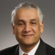

Professor Pramod Khargonekar
"Opportunities and Challenges in Integration of Renewable Generation in Electric Grids"
Vice Chancellor for Research, University of California, Irvine
Pramod P. Khargonekar received his BTech degree from IIT Bombay and PhD from the University of Florida. He has served in prestigious positions at the University of Minnesota, University of Michigan, and the U.S. National Science Foundation. His current research focuses on renewable energy, electric grids, and systems control theory. He is a Fellow of IEEE and IFAC and a recipient of numerous awards including the NSF Presidential Young Investigator Award and the IEEE CSS George S. Axelby Best Paper Award.
Professor Giorgio Rizzoni
"Connected and automated vehicle and powertrain control technologies to achieve unprecedented fuel economy gains"
Director, Center for Automotive Research, The Ohio State University
Giorgio Rizzoni is the Ford Motor Company Chair in ElectroMechanical Systems at OSU. Since 1999, he has directed the Center for Automotive Research (CAR). His research covers modeling, control, and diagnosis of advanced vehicles, focusing on energy efficiency and the interaction between vehicles and the power grid. He is a Fellow of SAE and IEEE, and has served as director for several DOE Graduate Automotive Technology Education Centers.
Keynote Address
Professor Petros Ioannou
"Connected Vehicles: Closing the loop with the highway"
Director, Center for Advanced Transportation Technologies, USC
Petros A. Ioannou is the A.V. 'Bal' Balakrishnan Chair Professor at USC. He is the recipient of the 2016 IEEE Control Systems Society Transition to Practice Award. His research interests include adaptive control, vehicle dynamics, and Intelligent Transportation Systems (ITS). He is a Fellow of IEEE, IFAC, and IET, and has authored over 400 research papers and 8 books.